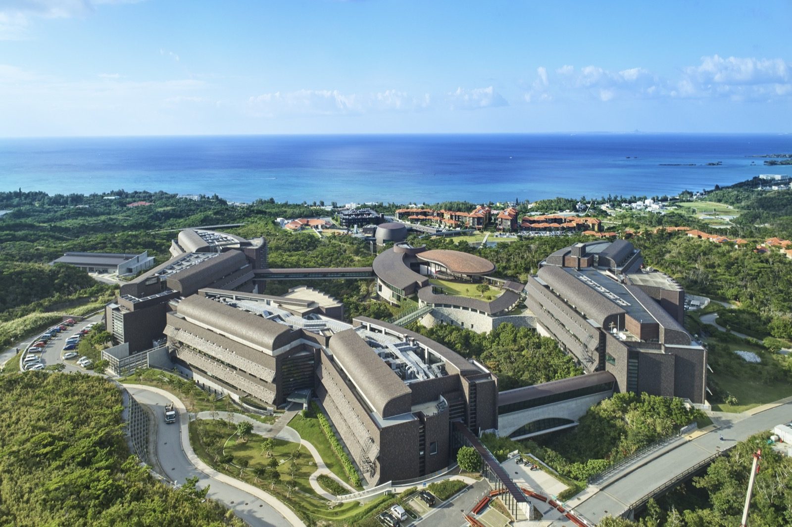
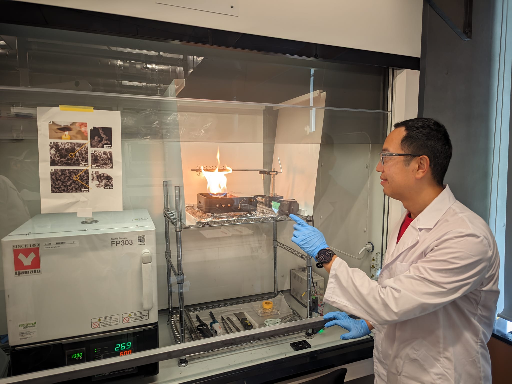
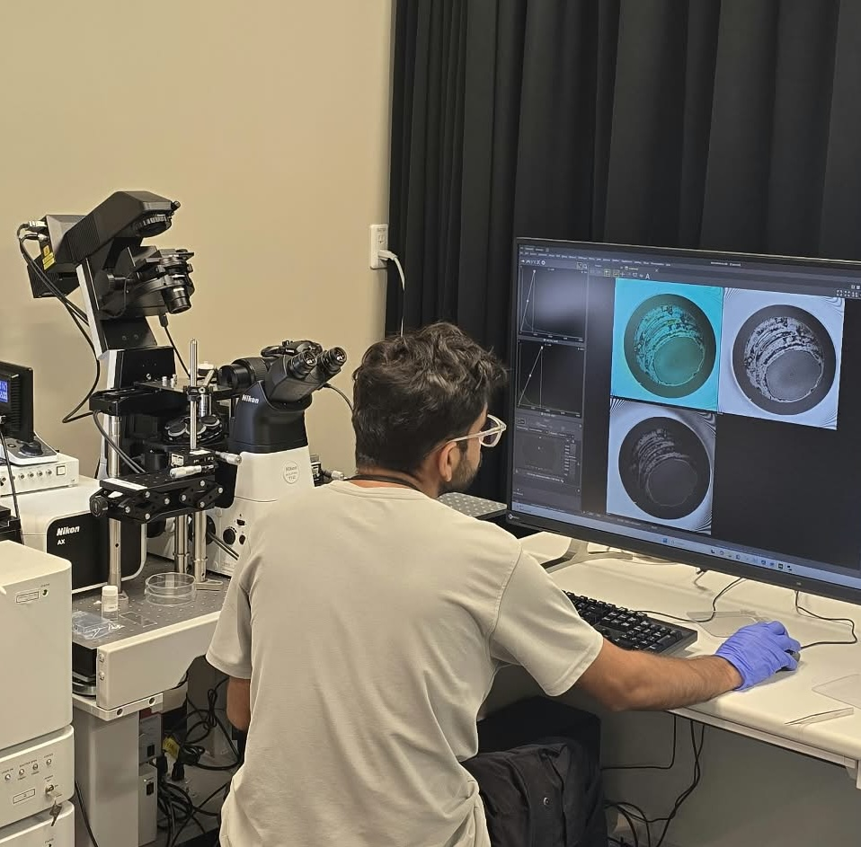
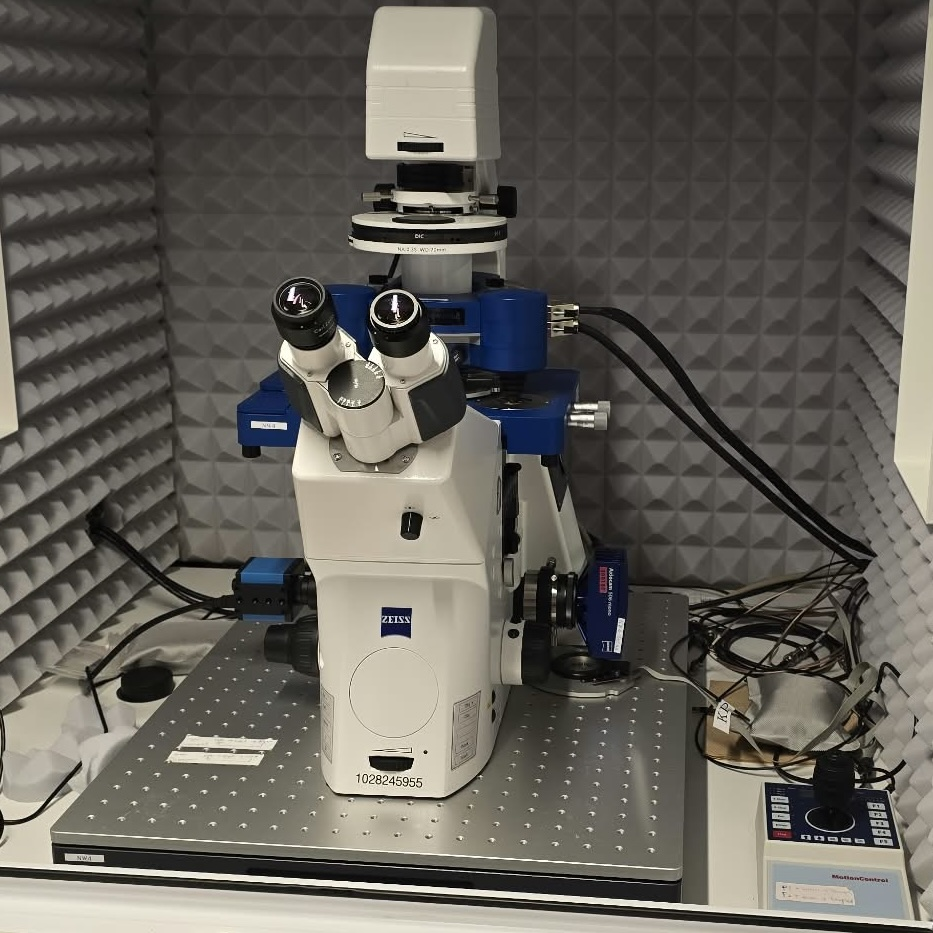
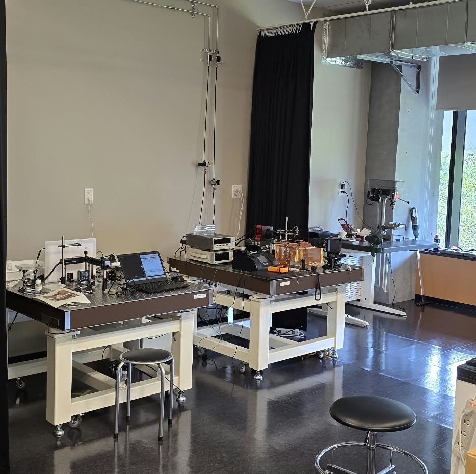

Where we work
The Lab
The Droplet and Soft Matter Unit is based at the Okinawa Institute of Science and Technology Graduate University (OIST) in Okinawa, Japan. Okinawa is a subtropical island known for its pristine beaches, coral reefs, and lush green hills, offering a unique backdrop for both cutting-edge research and everyday life. We are housed in Lab 5 (第5研究棟).

Lab 5 (第5研究棟)
1919 Tancha, Onna, Kunigami District, Okinawa 904-0412, Japan
Philosophy
We are a multidisciplinary group of physicists, chemists, and engineers who enjoys pursuing curiosity-driven science. We are a quantitative group, and we believe genuine understanding comes from careful measurement paired with simple theory to capture the essential physics. We value quality over quantity in everything we do, and we believe that science should be made as beautiful as humanly possible.
To that end, we maintain fully equipped wet and optics labs at OIST, along with access to a clean room and advanced atomic force microscopy (AFM).

EXPERIMENTS
We conduct tabletop experiments alongside wet chemistry for materials and surface fabrication. Typical techniques include high-speed imaging, laser-sheet visualization, optical profilometry, and confocal microscopy to capture fluid flow and droplet dynamics. We build many of our own custom instruments, including charge measurement setups. We also run extensive AFM experiments, measuring intermolecular forces and mapping electrical surface charge density.
A few snapshots of the lab

Making soot-templated superhydrophobic surface

Confocal microscope

JPK Nanowizard 4 AFM

Optical lab
Videos of our research
Elastic stress visualized with crossed polarizers
Droplet bouncing off lotus leaf
Levitating droplet visualized by interferometry
Collective motion of condensate droplets
THEORY
Our theoretical work is grounded in physics and scaling arguments, drawing on diverse topics such as thin-film lubrication theory, electrostatics, and Lifshitz theory of the Hamaker constant. Theory provides the framework for mechanistic understanding, uncovering physical principles and reducing complex systems to their minimal physical essence. Together, theory and experiment form a self-consistent cycle of discovery that defines the lab's approach.